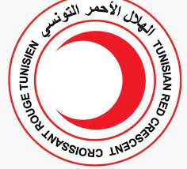

Membre du Club IEEE Branche Robotique (2 ans)
En tant que membre actif du Club IEEE Branche Robotique pendant deux ans, j'ai participé à plusieurs projets passionnants liés à la robotique. Nous avons travaillé sur des robots autonomes, des compétitions de robots, et d'autres projets novateurs. Cette expérience m'a permis de développer mes compétences techniques et de collaborer efficacement au sein d'une équipe.
.png)
Bénévole au Croissant Rouge (3 ans)
Pendant trois ans, j'ai consacré mon temps en tant que bénévole au sein du Croissant Rouge. Mon rôle comprenait l'organisation d'événements humanitaires, la collecte de fonds, et la participation à des programmes d'aide. Cette expérience m'a permis de développer des compétences en leadership, de renforcer ma résilience et de contribuer positivement à la communauté.

Participation à plusieurs hackathons
Au fil du temps, j'ai participé à plusieurs hackathons, où j'ai pu relever des défis stimulants, travailler sous pression et trouver des solutions créatives. Ces expériences ont renforcé ma capacité à résoudre des problèmes rapidement, à travailler en équipe et à rester innovant dans des environnements compétitifs.